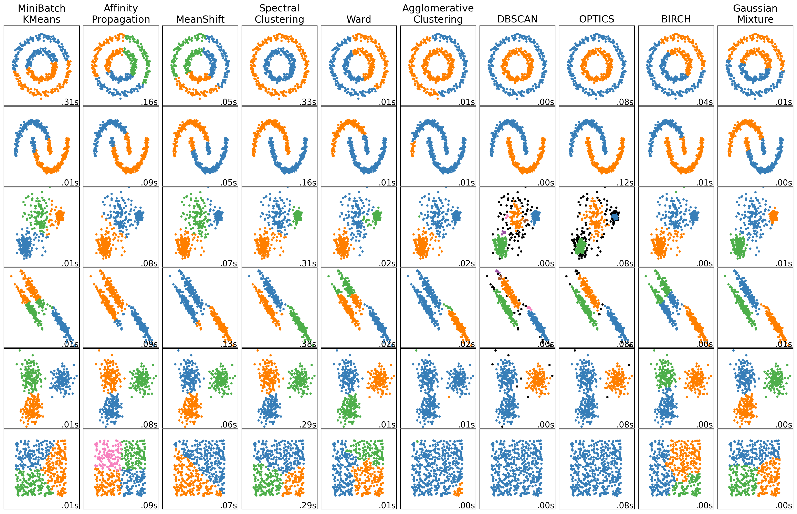

import time
import warnings
from itertools import cycle, islice
import matplotlib.pyplot as plt
import numpy as np
from sklearn import cluster, datasets, mixture
from sklearn.neighbors import kneighbors_graph
from sklearn.preprocessing import StandardScalerMore Sophisticated Clustering Algorithms
Let’s generate some data:
# ============
# Generate datasets. We choose the size big enough to see the scalability
# of the algorithms, but not too big to avoid too long running times
# ============
n_samples = 500
seed = 30
noisy_circles = datasets.make_circles(
n_samples=n_samples, factor=0.5, noise=0.05, random_state=seed
)
noisy_moons = datasets.make_moons(n_samples=n_samples, noise=0.05, random_state=seed)
blobs = datasets.make_blobs(n_samples=n_samples, random_state=seed)
rng = np.random.RandomState(seed)
no_structure = rng.rand(n_samples, 2), None
# Anisotropicly distributed data
random_state = 170
X, y = datasets.make_blobs(n_samples=n_samples, random_state=random_state)
transformation = [[0.6, -0.6], [-0.4, 0.8]]
X_aniso = np.dot(X, transformation)
aniso = (X_aniso, y)
# blobs with varied variances
varied = datasets.make_blobs(
n_samples=n_samples, cluster_std=[1.0, 2.5, 0.5], random_state=random_state
)# ============
# Set up cluster parameters
# ============
plt.figure(figsize=(9 * 2 + 3, 13))
plt.subplots_adjust(
left=0.02, right=0.98, bottom=0.001, top=0.95, wspace=0.05, hspace=0.01
)
plot_num = 1
default_base = {
"quantile": 0.3,
"eps": 0.3,
"damping": 0.9,
"preference": -200,
"n_neighbors": 3,
"n_clusters": 3,
"min_samples": 7,
"xi": 0.05,
"min_cluster_size": 0.1,
"allow_single_cluster": True,
"hdbscan_min_cluster_size": 15,
"hdbscan_min_samples": 3,
"random_state": 42,
}
datasets = [
(
noisy_circles,
{
"damping": 0.77,
"preference": -240,
"quantile": 0.2,
"n_clusters": 2,
"min_samples": 7,
"xi": 0.08,
},
),
(
noisy_moons,
{
"damping": 0.75,
"preference": -220,
"n_clusters": 2,
"min_samples": 7,
"xi": 0.1,
},
),
(
varied,
{
"eps": 0.18,
"n_neighbors": 2,
"min_samples": 7,
"xi": 0.01,
"min_cluster_size": 0.2,
},
),
(
aniso,
{
"eps": 0.15,
"n_neighbors": 2,
"min_samples": 7,
"xi": 0.1,
"min_cluster_size": 0.2,
},
),
(blobs, {"min_samples": 7, "xi": 0.1, "min_cluster_size": 0.2}),
(no_structure, {}),
]
for i_dataset, (dataset, algo_params) in enumerate(datasets):
# update parameters with dataset-specific values
params = default_base.copy()
params.update(algo_params)
X, y = dataset
# normalize dataset for easier parameter selection
X = StandardScaler().fit_transform(X)
# estimate bandwidth for mean shift
bandwidth = cluster.estimate_bandwidth(X, quantile=params["quantile"])
# connectivity matrix for structured Ward
connectivity = kneighbors_graph(
X, n_neighbors=params["n_neighbors"], include_self=False
)
# make connectivity symmetric
connectivity = 0.5 * (connectivity + connectivity.T)
# ============
# Create cluster objects
# ============
ms = cluster.MeanShift(bandwidth=bandwidth, bin_seeding=True)
two_means = cluster.MiniBatchKMeans(
n_clusters=params["n_clusters"],
random_state=params["random_state"],
)
ward = cluster.AgglomerativeClustering(
n_clusters=params["n_clusters"], linkage="ward", connectivity=connectivity
)
spectral = cluster.SpectralClustering(
n_clusters=params["n_clusters"],
eigen_solver="arpack",
affinity="nearest_neighbors",
random_state=params["random_state"],
)
dbscan = cluster.DBSCAN(eps=params["eps"])
#hdbscan = cluster.HDBSCAN(
# min_samples=params["hdbscan_min_samples"],
# min_cluster_size=params["hdbscan_min_cluster_size"],
# allow_single_cluster=params["allow_single_cluster"],
#)
optics = cluster.OPTICS(
min_samples=params["min_samples"],
xi=params["xi"],
min_cluster_size=params["min_cluster_size"],
)
affinity_propagation = cluster.AffinityPropagation(
damping=params["damping"],
preference=params["preference"],
random_state=params["random_state"],
)
average_linkage = cluster.AgglomerativeClustering(
linkage="average",
metric="cityblock",
n_clusters=params["n_clusters"],
connectivity=connectivity,
)
birch = cluster.Birch(n_clusters=params["n_clusters"])
gmm = mixture.GaussianMixture(
n_components=params["n_clusters"],
covariance_type="full",
random_state=params["random_state"],
)
clustering_algorithms = (
("MiniBatch\nKMeans", two_means),
("Affinity\nPropagation", affinity_propagation),
("MeanShift", ms),
("Spectral\nClustering", spectral),
("Ward", ward),
("Agglomerative\nClustering", average_linkage),
("DBSCAN", dbscan),
#("HDBSCAN", hdbscan),
("OPTICS", optics),
("BIRCH", birch),
("Gaussian\nMixture", gmm),
)
for name, algorithm in clustering_algorithms:
t0 = time.time()
# catch warnings related to kneighbors_graph
with warnings.catch_warnings():
warnings.filterwarnings(
"ignore",
message="the number of connected components of the "
+ "connectivity matrix is [0-9]{1,2}"
+ " > 1. Completing it to avoid stopping the tree early.",
category=UserWarning,
)
warnings.filterwarnings(
"ignore",
message="Graph is not fully connected, spectral embedding"
+ " may not work as expected.",
category=UserWarning,
)
algorithm.fit(X)
t1 = time.time()
if hasattr(algorithm, "labels_"):
y_pred = algorithm.labels_.astype(int)
else:
y_pred = algorithm.predict(X)
plt.subplot(len(datasets), len(clustering_algorithms), plot_num)
if i_dataset == 0:
plt.title(name, size=18)
colors = np.array(
list(
islice(
cycle(
[
"#377eb8",
"#ff7f00",
"#4daf4a",
"#f781bf",
"#a65628",
"#984ea3",
"#999999",
"#e41a1c",
"#dede00",
]
),
int(max(y_pred) + 1),
)
)
)
# add black color for outliers (if any)
colors = np.append(colors, ["#000000"])
plt.scatter(X[:, 0], X[:, 1], s=10, color=colors[y_pred])
plt.xlim(-2.5, 2.5)
plt.ylim(-2.5, 2.5)
plt.xticks(())
plt.yticks(())
plt.text(
0.99,
0.01,
("%.2fs" % (t1 - t0)).lstrip("0"),
transform=plt.gca().transAxes,
size=15,
horizontalalignment="right",
)
plot_num += 1
plt.show()/Users/johbay/anaconda3/lib/python3.11/site-packages/sklearn/cluster/_kmeans.py:1930: FutureWarning:
The default value of `n_init` will change from 3 to 'auto' in 1.4. Set the value of `n_init` explicitly to suppress the warning
/Users/johbay/anaconda3/lib/python3.11/site-packages/sklearn/cluster/_kmeans.py:1930: FutureWarning:
The default value of `n_init` will change from 3 to 'auto' in 1.4. Set the value of `n_init` explicitly to suppress the warning
/Users/johbay/anaconda3/lib/python3.11/site-packages/sklearn/cluster/_kmeans.py:1930: FutureWarning:
The default value of `n_init` will change from 3 to 'auto' in 1.4. Set the value of `n_init` explicitly to suppress the warning
/Users/johbay/anaconda3/lib/python3.11/site-packages/sklearn/cluster/_kmeans.py:1930: FutureWarning:
The default value of `n_init` will change from 3 to 'auto' in 1.4. Set the value of `n_init` explicitly to suppress the warning
/Users/johbay/anaconda3/lib/python3.11/site-packages/sklearn/cluster/_kmeans.py:1930: FutureWarning:
The default value of `n_init` will change from 3 to 'auto' in 1.4. Set the value of `n_init` explicitly to suppress the warning
/Users/johbay/anaconda3/lib/python3.11/site-packages/sklearn/cluster/_kmeans.py:1930: FutureWarning:
The default value of `n_init` will change from 3 to 'auto' in 1.4. Set the value of `n_init` explicitly to suppress the warning

More sophisticated models using sci-kit learn
Sklearn provides access to a variety of clustering algorithms
- MiniBatch K-Means
- How it Works: MiniBatch K-Means is a variant of K-Means that uses small random batches of the data to perform clustering updates, making it faster and more memory-efficient than regular K-Means.
- Mechanism: The algorithm randomly samples small batches of data points in each iteration, computes cluster assignments, and updates centroids based on the sample.
- Use Case: Best for clustering large datasets where traditional K-Means would be too slow or memory-intensive.
- Affinity Propagation
- How it Works: Affinity Propagation doesn’t require a predefined number of clusters. Instead, it uses a similarity matrix to identify exemplars (representative points for each cluster).
- Mechanism: Points communicate through “messages” in a matrix until they converge on exemplars, using parameters like damping and preference to adjust message influence and cluster count.
- Use Case: Suitable for data with well-defined clusters where the number of clusters isn’t known beforehand, but computationally intensive on large datasets.
- MeanShift
- How it Works: MeanShift clusters points by iteratively moving towards the densest regions, identifying clusters as peaks in data density.
- Mechanism: The bandwidth parameter controls the neighborhood size. Points are pulled towards their local density center, and clusters form around these peaks.
- Use Case: Good for finding arbitrarily shaped clusters without needing to set a fixed number of clusters, but slow with high-dimensional data.
- Spectral Clustering
- How it Works: Spectral Clustering applies eigenvalue decomposition to a similarity matrix to reduce dimensions and enhance separability before applying clustering.
- Mechanism: Constructs a similarity (affinity) matrix of the data, reduces dimensions with eigenvectors, and clusters the data based on these new dimensions.
- Use Case: Suitable for data with complex, non-convex shapes but computationally expensive on large datasets due to matrix decomposition.
- Ward’s Agglomerative Clustering
- How it Works: Ward’s method is a hierarchical clustering approach that starts with each data point as its own cluster, then merges pairs of clusters to minimize variance.
- Mechanism: The algorithm iteratively merges clusters to minimize the within-cluster variance, based on linkage (distance between clusters).
- Use Case: Works well with small to medium-sized datasets where clusters have a clear hierarchy; not ideal for very large datasets due to high computational complexity.
- Agglomerative Clustering (Average Linkage)
- How it Works: Another hierarchical approach, it merges clusters based on average linkage, which minimizes the average pairwise distance between clusters.
- Mechanism: Begins with each data point in its own cluster, then iteratively merges clusters based on the average distance between all pairs of points in different clusters.
- Use Case: Useful for hierarchical clustering when clusters are of varying sizes or non-convex shapes.
- DBSCAN (Density-Based Spatial Clustering of Applications with Noise)
- How it Works: DBSCAN forms clusters based on the density of points, where points in dense regions are considered part of the same cluster, and outliers are marked separately.
- Mechanism: Uses two parameters, eps (maximum distance between points) and min_samples (minimum number of points in a neighborhood), to form clusters based on point density.
- Use Case: Effective for identifying clusters of varying shapes and sizes with noise/outliers, especially in spatial data.
- OPTICS (Ordering Points To Identify the Clustering Structure)
- How it Works: OPTICS is similar to DBSCAN but more flexible in finding clusters with varying densities by generating an ordering of points and cluster reachability distances.
- Mechanism: Unlike DBSCAN, it doesn’t produce explicit clusters initially but instead creates an ordered list of points with reachability distances that can later be clustered based on density.
- Use Case: Useful for data with clusters of varying density, as it can adaptively adjust for different densities and still handle noise well.
- BIRCH (Balanced Iterative Reducing and Clustering using Hierarchies)
- How it Works: BIRCH builds a tree structure of data points, clustering as it builds, making it efficient for large datasets.
- Mechanism: Uses a tree structure called a Clustering Feature Tree to incrementally cluster incoming points based on a predefined threshold for cluster compactness.
- Use Case: Ideal for large datasets where a single pass through the data is beneficial, but may struggle with clusters of varying densities.
- Gaussian Mixture Model (GMM)
- How it Works: GMM assumes that the data is generated from a mixture of Gaussian distributions and uses Expectation-Maximization (EM) to estimate the parameters.
- Mechanism: GMM represents clusters as Gaussian distributions and iteratively refines cluster assignments by maximizing likelihood, allowing for flexible cluster shapes.
- Use Case: Best for data that roughly follows a Gaussian distribution; works well on data where clusters may overlap but can be slow on large datasets.
| Algorithm | Main Idea | Shape of Clusters | Optimal Use Case |
|---|---|---|---|
| MiniBatch K-Means | Fast K-means for large datasets | Spherical | Large datasets needing fast clustering |
| Affinity Propagation | Message-passing clustering | Arbitrary | Unknown cluster count, smaller datasets |
| MeanShift | Density peak clustering | Arbitrary | Non-parametric clustering for complex shapes |
| Spectral Clustering | Eigen-decomposition + clustering | Non-convex | Complex, non-convex clusters |
| Ward’s Agglomerative | Hierarchical clustering by variance | Hierarchical, generally convex | Small, hierarchical data |
| Average Linkage | Hierarchical by average linkage | Hierarchical | Varied shapes with hierarchical clusters |
| DBSCAN | Density-based clustering | Arbitrary | Clusters with noise, varying shapes |
| OPTICS | Density-based, adaptive to density | Arbitrary | Clusters with varying densities |
| BIRCH | Tree-based clustering for large data | Generally convex | Large datasets needing efficient clustering |
| Gaussian Mixture | Probabilistic, Gaussian distribution | Elliptical or spherical | Overlapping clusters with Gaussian assumptions |